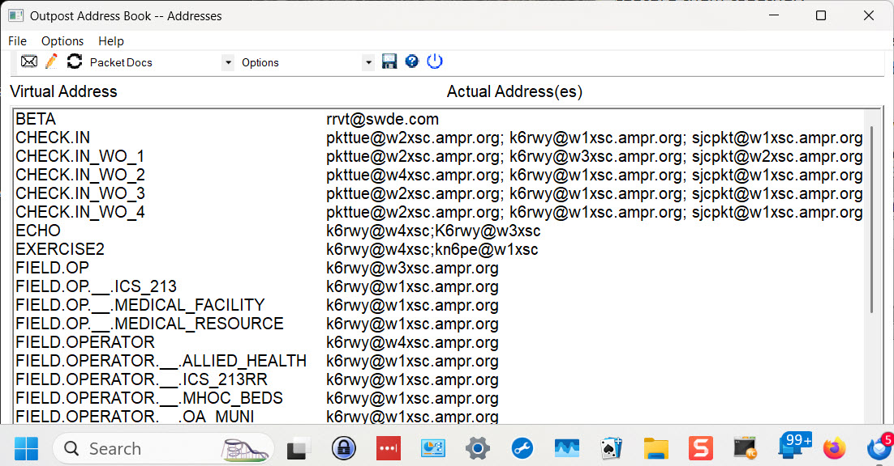

Address Book
|  |
| Select address record and use right mouse popup menu to copy field of interest to scratch pad. |
When forms are sent by Outpost the "To" field and "Loc" field describe the recipient of the form but do not describe the actual packet address. The actual packet address is added after the browser sends the form to Outpost.
The OPaddress application may be started (as an option) by PreOutpost, cobbles up the address records held by Outpost and presents them in an independent window. Furthermore, when the refresh menu item on the window is selected (left mouse click) OPaddress will capture any new form addresses in the current day's log and present them.
Each entry presents the "virtual" address (the address in a form), the "location/organization" and the "actual" address for each entry. Each entry takes one line. The dialog box may be resized and moved as needed by the user. The position and size are remembered from on instantiation to the next.
Using and entry may be done by copying one of the three fields into the scratch pad using the right mouse menu or one of three control characters (keyboard shortcuts). First select the line (Address Record) of interest and then either press the right mouse button or use one of keyboard shortcuts:
- Ctrl+C -- Copy Actual Address
- Ctrl+B -- Copy Virtual Address
- Ctrl+L -- Copy Location/Organization
Then select the field in the browser or Outpost where the item should be placed and use the shortcut Ctrl_V or Paste on the right mouse button popup menu.
Creating/Editing/Deleting New Addresses
The toolbar () includes the commnds:
- Create (envelope icon) -- Create a new Address entry
- Edit (pencil icon) -- Allow editing or deleting the currently selected address entry
- Refresh (dueling arrows icon) -- Refresh the list of addresses
Since OPaddress may affect entries already created in Outpost saving the new entries (or modified entries) is deferred. While the application is running all entries that appear are held in the application. No changes, additions or deletions in the Outpost files are performed until the SaveAll (floppy disk icon) menu item is selected. Alternatively, when the application is closed a prompt to save the entries will be displayed before exiting.
Documentation
Several pdf documents may be useful when operating a packet station. The Packet Docs drop down list contains the following pdf files in the menu (The documents are updated from time to time):
- Message Handling
- Packet Frequencies
- Form Routing
- Routing Slip
- Packet Subject Line
- Check In/Out
Options
There are three options (rarely used commands) available on the toolbar and the menu. They are:
- Find PDF Reader -- There may be more than one pdf reader. A dialog box pops up to request the app name for the pdf reader then the user must select the reader that works well with Outpost Address Book app (may take several tries).
- Find PDF Files -- Refresh the pdf list in the initialization file (Useful only after installing a new version).
- Set Drill Traffic -- Load the Clip Board with "**** This is drill traffic ****"